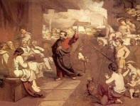

Discipulado
Esta é a lista de estudos necessários para que o aluno fique apto ao batismo. São artigos com audios e PDF para dar continuidade aos estudos mesmo offline.
by Flavio
001 - Os Bereanos
Conheça os nobres irmãos de Bereia, que em toda pregação que ouviam examinavam nas Escrituras para confirmar sua veracidade. Continuar a ler...